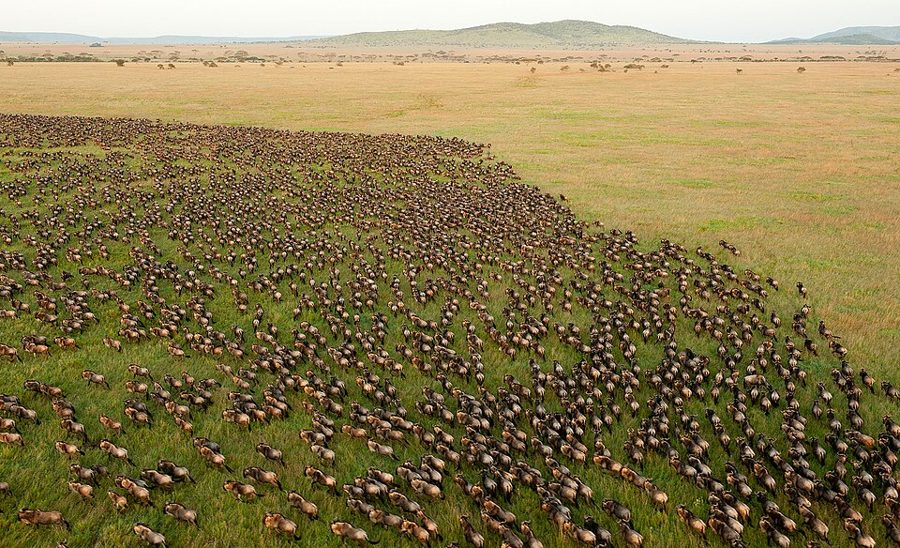
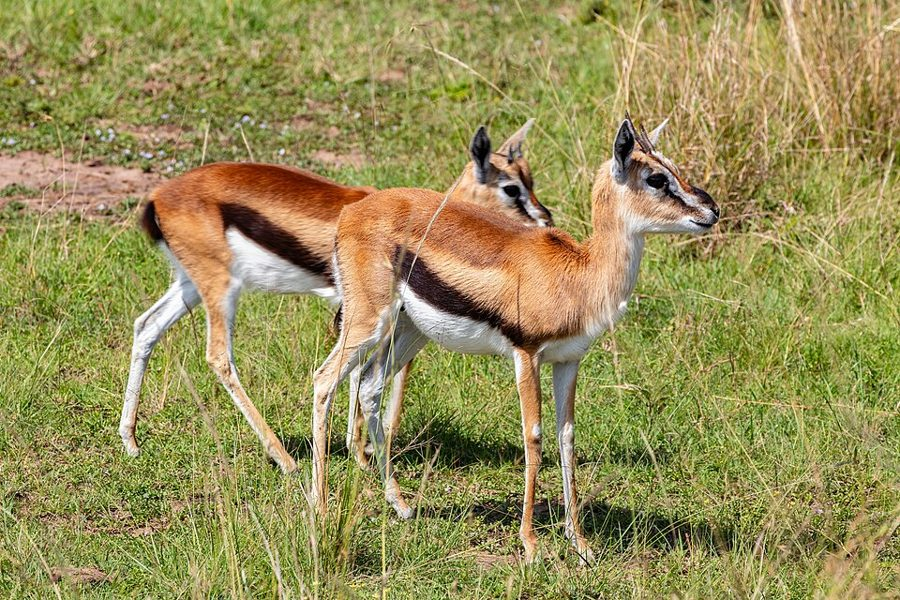
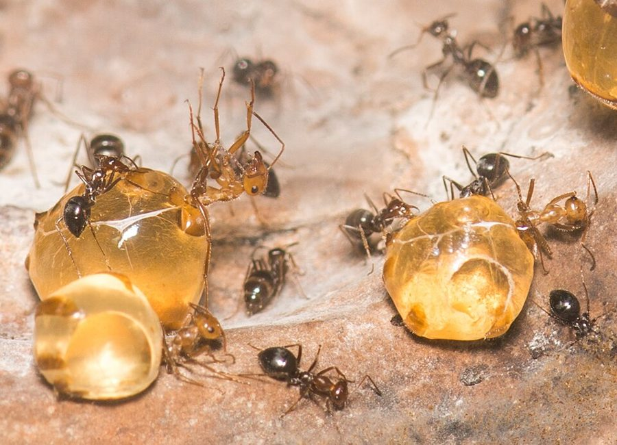
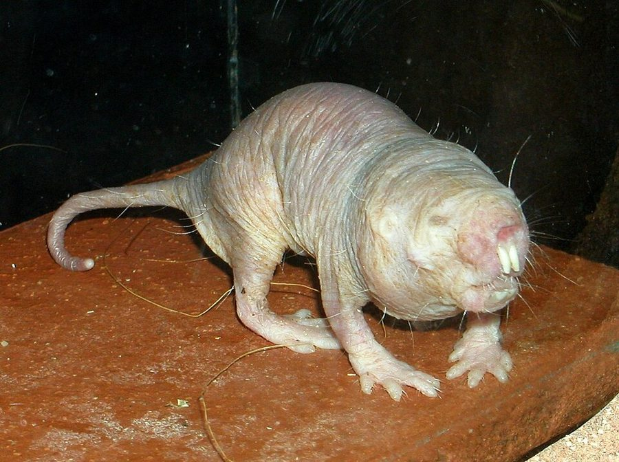

Lest this lead to misunderstanding
… Lest this lead to misunderstanding, I must …
为免误会
lest 是书面的「以免」。作者在这里先防一个和书名一样的误读：selfish herd 不是「自私的兽群」，是「由自私的个体组成的兽群」。
第 10 章的前半。作者自己说这是有点杂的一章（rather miscellaneous）：他回头清理第 1 章挂出的几笔「利他」账，鸟的报警声、瞪羚的跳跃、蜜蜂的自杀式蜇刺，外加一个更大的现象：动物为什么成群。用到的是 Hamilton 的自私兽群模型、作者自己的两个报警理论、Zahavi 的信号说，最后是膜翅目奇特的性别决定和姐妹之间 3/4 的亲缘。读的时候抓两条线：每个「利他」故事换到基因的眼光后还剩多少利他；以及作者从「更亲」推到「所以不育」时用了多少限定词。

第 5 到第 9 章讲了同类之间的打斗、亲子和两性。第 1 段说，还有一类现象这些标题都没盖住：群居。第 2 段交代全章的安排：顺路兑现第 1 章的诺言，解释那几个「看似利他」的例子（第 1 章第 16、17、31 段，瞪羚那条在第 1 章的 §5），然后讲社会性昆虫，章末讲互惠利他（下一页）。§3、§4 回指的前文很多：第 5 章的混合策略、第 7 章的生育与抚养、第 8 章 Alexander 的亲代操纵、第 6 章的亲缘关系指数。
群居、报警、职虫一辈子不生育替母亲养孩子：这几种看上去最舍己为群的行为，换到基因的眼光，还算利他吗？
读的时候带着这几个问题。不用先找答案，读完回来对照「检查一下理解」。
这一章没有一条贯穿的论证，是一个个「看似利他的现象，配一个自私的解释」排下来。§1 从群居起头，搭一个最简单的几何模型，模型里连合作都没有。§2 换到看上去在主动帮同伴的报警声：亲属选择一句带过，接着是作者自己的两个理论，再到最难的瞪羚跳跃，用 Zahavi 的「横向思维」收住。§3 突然跳到社会性昆虫，先用一大段渲染它们的奇迹，紧接着一句话拆掉悬念：职虫不育，自杀就不奇怪。问题于是换成「不育怎么演化出来的」，第 20 段把第 5、7 章的两个概念拉回来，这里读着会觉得跳。§4 摆出两种对立的说法，女王操纵职虫还是职虫「耕耘」女王，然后进入遗传算账。这一页停在第 27 段的 3/4；下一页第一句就是「但是有个问题」，要接着读。
作者落在哪：群居、报警、跳跃都能从个体的私利讲通，不必求助于类群选择；职虫不育的前提是被抚养的至少和亲生子女一样亲，膜翅目的性别决定让姐妹比子女更亲，作者说这「很可能」就是职虫不育的来由。
这一页是原书第 10 章的第 1–4 节。原书各章没有小标题，粗体的节名是本站起的，下面是这一节第一段开头的几个词，在电子书里搜它就能跳过去。读完打个勾。
先把这一页用到、作者默认你懂的几个概念讲一遍。讲的是概念本身，作者拿它推出什么，读原书时自己看。前几章讲过的利他行为、类群选择、亲属选择、亲缘关系指数、稳定的多态性和混合策略，点进去看。
Hamilton 1971 年提出的一个几何模型。设想捕食者总是扑向离它最近的那只猎物。给每只猎物圈出一块地：地上任何一点离它都比离别的个体近，书里叫危险区（domain of danger）。捕食者藏在谁的这块地里，谁就倒霉。程序员可以把它想成最近邻划分（Voronoi 图）：每个点管着离自己最近的那片区域。群中间的个体四面都有邻居，危险区小；群边上的个体，外侧一大片空地都归它。于是谁都想往邻居之间的空当里钻，群越挤越紧。模型里没有合作，也没有谁替群体着想；名字里的「自私」说的是个体，不是兽群。整群因此是更安全还是更显眼，不在这个模型里。
在这一页：第 5–7 段是模型本身。第 12 段作者自己的「绝对不要脱离队伍」理论又用到危险区：第一个飞起来的鸟，危险区暂时变大。
蚂蚁、蜜蜂、黄蜂、白蚁的一个巢里，往往只有极少数个体生育，其余成千上万的职虫（译本的叫法，今天通常叫工蚁、工蜂）不生育或很少生育，只干活：觅食、育幼、筑巢、守卫，有的还分化成兵蚁之类的等级。今天把这种生活方式叫真社会性（eusociality），通常指三条同时成立：合作照顾幼体，几代同巢，有生育和不生育的分工。达尔文在《物种起源》里就把不育的职虫当作自然选择学说的一个特别难题：不生孩子的特性，怎么能一代代传下去？拿程序打比方，像一个只负责服务、自己从不复制的进程，它的代码要传下去，只能靠它伺候的那个会复制的进程，而且两边得跑着同一份代码。蚂蚁、蜜蜂、黄蜂的职虫都是雌性；白蚁的职虫雌雄都有。
在这一页：第 16–21 段。第 17 段说职虫不育，自杀式蜇刺就不奇怪；第 20 段把它接到第 5 章的混合策略和第 7 章的生育与抚养。
膜翅目（蚂蚁、蜜蜂、黄蜂）的性别决定方式：受精卵发育成雌性，有两套染色体；未受精卵发育成雄性，只有母亲给的一套，没有父亲。正文没给它起名字，今天的叫法是单倍二倍性。蓟马和一些螨也是这样。它打乱了第 6 章的算法，因为雄性只有一套基因，精子个个相同：同一个父亲的女儿，从父亲那里得到的那一半完全一样。于是一只雌性和同父同母的姐妹之间是 3/4，比和自己的子女（1/2）还亲；和兄弟却只有 1/4。前提是母亲只和一只雄性交配；交配的雄性越多，姐妹之间平均越疏。下面的图是这三个数的来历。说起 Hamilton，人们最常记住的就是这个 3/4，作者 1989 年在注 52 里专门为此抱怨过。
在这一页：第 23–27 段。第 25 段算母子，第 26 段算姐妹；兄弟的 1/4 留到下一页第 28 段，它决定 3/4 到底能不能占到便宜。
按在书里出现的顺序排，标题前是节号。只讲到读懂这一页需要的程度。
第 4 段引的论文是 Hamilton 1971 年发表在《理论生物学杂志》上的 Geometry for the selfish herd。论文的意思是：群居可以是每个个体找掩护的结果，不需要对种群有什么好处。作者在第 7 段说，后来别人提出过更复杂、更贴近现实的模型，但这个最简单的模型仍然有用。同一位 Hamilton 是 §4 那个 3/4 想法的主人，也是第 6 章亲属选择的提出者。
第 8 段说 Marler 注意到：许多小型鸣禽的报警声，声学特性像是专门设计成让捕食者难以定位的。这出自他 1955 年在《自然》上的短文《一些动物叫声的特性》，文中把叫声的结构和用途对应起来：要让同伴找到的叫声容易定位，报警声难以定位。作者由此倒推：报警是危险的，否则不会被选择成这样。第 10 段的 Trivers 列过五种自私的解释，作者没有展开。第 12 段说 Charnov 和 Krebs 1975 年在《美国博物学家》上发表的短文，标题就是「报警声的演化：利他还是操纵？」，他们干脆用「操纵」来形容报警的鸟对同伴做的事。

东非草原上最常见的小型瞪羚。碰到捕食者时，它们有时不急着跑，而是四腿绷直、原地高高弹起，英文叫 stotting。第 1 章第 31 段说过，Ardrey 认为这只能用类群选择解释（他的事见第 1 章）。第 14 段说这个理论 Smythe 先提出过雏形：他 1970 年在《美国博物学家》上的短文，讨论哺乳动物里有没有做给捕食者看的「邀请追逐」信号。把它推到底的是 Zahavi。作者转述 Zahavi 的意思：跳跃的观众是捕食者，不是同伴。

第 16 段的蜜罐蚁，图上这一属生活在北美西部的干旱地区。有一部分职蚁专门当储藏罐：同伴把花蜜之类的液体喂给它们，它们的腹部撑得像葡萄，倒挂在地下巢室的顶上一动不动，食物缺乏时再吐出来分给同伴。作者拿它来说明社会性昆虫的个体几乎不算「个体」，整个巢像一个更高层的个体。

第 20 段说生育者和抚养者分家「似乎只在社会性昆虫里真的发生了」。1989 年的注 51 说：我们都这么以为，可忘了裸鼹鼠。它们生活在肯尼亚、索马里、埃塞俄比亚干旱地区的地下，一个群几十到几百只，只有一只雌性生育，其余雌雄都不生育，干活的大小不一。注里依据的是 Jennifer Jarvis 在开普敦大学养的群体、Brett 在肯尼亚的野外观察，以及 Alexander 和 Sherman 在美国的研究。Jarvis 1981 年在《科学》上发表的论文，标题就是「哺乳动物里的真社会性」。
白蚁不是膜翅目，雌雄都是两套染色体，3/4 那一套用不上，所以常被当作 Hamilton 理论的「难题」。注 52 介绍了 Hamilton 1972 年在《生态学与系统学年评》上提出的一个解释：白蚁的王和后死了，由子女顶替，和剩下的父或母、或兄弟姐妹之间交配，巢里越来越近亲；而飞出去建新巢的王和后来自不同的巢，又是远交。这样一近一远交替，某个阶段的白蚁和兄弟姐妹比和自己的子女更像。这个理论常归到 Bartz 名下（他 1979 年在 PNAS 上发表），作者说他得把 Hamilton 自己的论文塞到他鼻子底下，Hamilton 才相信是自己先想到的。这个理论后来的命运，见「对照今天」。
按节排，每节前面是分节地图里的节名。标着「每个字都认识」的，是熟词生义、习语和反话，最容易读错。灰色的那几个字是原句里的位置，在电子书里搜它就能找到。
对着中译本（40 周年增订版）读的时候看这一节。下面是译本这几节和这一页尾注里会让人读错的地方：灰字是英文原文那一处的几个词，在英文电子书里搜它；方框里是译本的原句，在译本电子书里搜它。措辞别扭但意思没错的不收。全书的勘误汇总在译本勘误。
… remember what all the fuss was about.
译本：「言之成理的解释而莫衷一是」
原文说：好解释已经多到让人记不起当初为什么觉得报警声是个难题，问题等于解决了。译本成了「面对众多解释拿不定主意」，正好相反。
… moved Ardrey to state categorically that …
译本：「使阿德里感动地断言」
moved 在这里是「促使」，categorically 是「斩钉截铁地」。意思是：瞪羚那种看似自杀的利他，让 Ardrey 一口咬定只有类群选择才能解释。
… Food is shared to such an extent …
译本：「食物按极其严格的标准分配」
原文说：食物分享得如此彻底，简直可以说全巢共用一个胃。说的是「共享的程度」，不是「分配的规矩」。后半句「集体的胃」译本译对了，前后连起来读才通。
… they do not have to cope …
译本：「这两类昆虫互不干扰」
原文说：生育者和抚养者各自干得更有效率，因为不用再兼顾对方那份活。这是分工的好处，紧接着作者问：对谁有效率？
… a very odd system of sex determination.
译本：「这一群体具有一种十分奇特的性取向体系」
sex determination 是性别决定：一个卵发育成雌还是雄由什么决定。性取向是另一回事。这一节讲的全是性别决定（受精卵为雌、未受精卵为雄），见上面的概念块。
… that it is tempting to speculate.
译本：「这确实很让人怀疑」
原文说：裸鼹鼠没有扩散型，这让他的达尔文直觉大为惊讶，忍不住要猜一猜。下面「我的直觉是」一整段都是他明说的猜测，不是怀疑别人的研究。
… a path tens of miles wide, …
译本：「同时收割10英里（约19千米）宽的田地」
tens of miles 是「几十英里」，不是 10 英里；而且 10 英里约合 16 千米，不是 19 千米。
… so immediately catchy that every barrow-boy …
译本：「在其中一个旋律的中间出现了一个破音」
原文的比喻：一部长篇交响乐中间随手抛出的一支曲子太上口，街头小贩都吹着口哨传唱，于是整部交响乐被等同于这支曲子。3/4 就是那支曲子。译本成了一个破音被小贩嘘，比喻的意思全反了。
… theory, aphids not being haplodiploid!
译本：「蚜虫不是单倍多倍体」
haplodiploid 是单倍二倍性（二倍体），这条注前面译对了，从蚜虫这段起连着几处变成「单倍多倍体」，容易以为是另一个概念。全是同一个东西：雄性单倍、雌性二倍。
… This predisposes her to stay behind …
译本：「这就决定了它能留在父母的巢穴内」
predispose 是「使她倾向于留下来」，和正文第 27 段的 might well predispose 是同一个词。作者两处都只说「倾向」，译成「决定」就说过头了。
… somebody has to do some bearing, …
译本：「其中一些必须负责孵化」
这里明说用的是第 7 章「生育和抚养」那对术语，译本正文第 7 章和本章第 20 段都译作「生育和抚养」，这条注却成了「孵化以及照顾」，读者会以为是两回事。
… They exemplify the going concern or …
译本：「它们的关注要点中并不包含实质的中空树木」
going concern 是商业用语，指一门正在红火经营的生意。作者的意思：父母占着的树洞、裸鼹鼠挖好的地道网，都是现成的好产业，留下来帮忙比出去白手起家划算。译本这几段因此读不通。
The death of a single sterile worker bee is no more serious to its genes than … the shedding of a leaf in autumn …— §3 第 17 段。本站译：一只不育工蜂的死，对它的基因来说，并不比秋天落一片叶子对一棵树的基因更要紧。
这是作者在拆悬念，口气是冷静的类比，不是冷酷。关键词是 sterile：前面一大段社会性昆虫的「舍己」奇迹，到这里一句话就不再神秘，因为职虫的基因本来就只能经由别的身体传下去，正像叶子的基因要靠树的种子。容易被读成「个体的死无所谓」的道德判断；作者说的只是基因账上的分量。这一句也把问题换掉了：自杀不难解释，难解释的是不育本身。
… this might well predispose a female to farm her own mother as an efficient sister-making machine. … Hence worker sterility evolved.— §4 第 27 段。本站译：……这很可能促使雌性把自己的母亲当成一台高效的「造姐妹机」来经营。……职虫的不育就是这样演化出来的。
把这两句放在一起读，能看到全页论证的一个跳跃：前一句是 might well（很可能），隔了一句，后一句已经是 Hence（所以）。从「姐妹更亲」到「不育由此演化」，中间至少还缺两步：兄弟只有 1/4 怎么办（下一页第 28 段作者自己提出来），以及别的条件是不是更要紧。读的时候把它当成 1976 年书里讲的一个假说（Hamilton 的想法、作者的讲法），不是结论。
正文里的星号是 1989 年第二版加的，点了跳到书后的尾注。下面是这一页的每个星号：注里说了什么，值不值得现在就点开。英文是星号前紧挨着的几个词，在电子书里搜它就能找到那个星号。
… that it has actually happened.*
正文说生育者、抚养者分家只在社会性昆虫里发生，注里补上裸鼹鼠：只有一只「女王」生育，职虫雌雄都有，大小连续，最大的也许是兵或「活粮仓」。作者最大的困惑是它们似乎没有扩散的生殖型，于是明说要猜：也许有一种没被发现的扩散型（比如长毛的），再拿蝗虫的独居型和群居型类比。这个猜测后来怎样了，见「对照今天」。值得读，前四段就够。
… to her offspring of either sex.*
作者没有撤回 3/4，但给它降了格：它好懂又不太好懂，成了一个传得飞快的觅母，很多人以为 Hamilton 的理论就只有这个；于是 3/4 一受质疑，人们就以为整个亲属选择都错了。他举了两个误读的例子，又补上 Hamilton 解释白蚁的循环近交，最后说：只要有一定程度的单配，兄弟姐妹就和子女一样亲；哪些物种真的留下来帮忙（「巢中帮手」、裸鼹鼠），再看「现成产业」（going concern）这类不对等的条件。一定要读，最后几段是今天主流答案的雏形。
读完这一页的几节再看。下面是作者在这几节里的论点，由本站按论点重新组织，不按原书的顺序；每条下面是依据所在的段落，拿不准就回书里那几段再读一遍。
借 Hamilton 的模型：捕食者扑最近的猎物，个体只为缩小自己的危险区，就足以聚成密群。报警声先给一句亲属选择，再给作者自己的两个理论（他觉得比 Trivers 列的五种更有说服力）：报警让同伴安静，或让大家一起飞走、自己不落单。按这些理论，不报警反而更危险，所以报警的危险和私利并不矛盾。
§1 第 4–7 段，§2 第 9–13 段Ardrey 说跳跃只能用类群选择解释。作者介绍 Smythe 起头、Zahavi 推到底的「大胆理论」：跳跃是做给捕食者看的，显示自己年轻健壮，劝它去追跳得低的邻居；按这个理论，跳跃谈不上利他。
§2 第 14–15 段不育的个体只能经由亲属传基因，自杀就像落叶。种群分成生育者和抚养者，只有在抚养者和被抚养者至少像亲子一样近时才稳定；作者说这似乎只在社会性昆虫里真的发生了（1989 年的注 51 补了裸鼹鼠）。
§3 第 17、20 段，注 51雄性只有母亲的一套基因，同父姐妹的亲缘是 3/4，比子女的 1/2 还近。照 Hamilton 的想法（作者说表述不完全一样），雌性留下来让母亲生姐妹更划算；他说「所以」不育演化出来了，并说膜翅目真社会性独立演化 11 次以上「想来不是偶然」。（1989 年的注 52 没有撤回，但说 3/4 被传过了头，别把它当成 Hamilton 理论的全部；兄弟只有 1/4 的麻烦在下一页。）
§4 第 22、25–27 段，注 52合起来：第 1 章挂出的几个「利他」例子，这一页一个个改写成个体或基因的私利。最难的职虫不育，作者交给了第 6 章的亲缘算账，并把单倍二倍性当作钥匙；这把钥匙够不够用，下一页先用性比率去检验。
这本书 1976 年出版。下面挑出这一页里能被后来的研究检验的说法，分「书里 / 当时 / 今天」三栏，并给一个结论。结论判的是标题里「书里的说法：」后面那一句。全书的这一节汇总在对照今天。
读完作者的论点，再看它站不站得住。每一块摆出三样：主流怎么看，作者怎么看，本站的评论。最后一句是本站对这一页的总体判断。
主流看法：单倍二倍性不是真社会性的主因（见「对照今天」），但亲缘仍是主流解释的核心：所考察的膜翅目各次起源，祖先都是单配，单配让兄弟姐妹平均和子女一样亲（Hughes 等 2008）。2010 年 Nowak、Tarnita 和 E. O. Wilson 在《自然》上主张不必用亲属选择解释真社会性，次年一百多位学者联名在同一刊物上反驳。
作者的看法：1976 年说这是自私基因理论最辉煌的胜利之一，「所以」职虫不育（第 22、27 段）。1989 年的注 52 说 3/4 是交响乐里一支太好记的曲子，别因为不喜欢曲子就扔掉整部交响乐，并写下：只要有一定程度的单配，兄弟姐妹就和子女一样亲。他在第 6 章的注 39 里也说过终生储精可能和单倍二倍性一样重要（见第 6 章（下））。
本站的评论：交响乐的比喻经住了时间：曲子过时了，交响乐还在。更难得的是注 52 那句「一定程度的单配」，几乎就是今天主流答案的雏形，作者 1989 年已经把重点挪对了地方。但 1976 年的正文从「很可能」一步跳到「所以」，是说过头了。读者该带走的是「帮亲兄弟姐妹和养自己的孩子一样划算」，而不是 3/4 这个数。
主流看法：一个现象能编出很多种说得通的解释，不等于知道哪一种对，行为生态学后来靠野外检验去分辨。Sherman 1977 年在《科学》上发表的贝氏黄鼠研究发现，附近有亲属的雌鼠更常报警，他比较的几种解释里，警告亲属最符合数据；FitzGibbon 和 Fanshawe 1988 年的瞪羚研究支持 Zahavi 的读法。
作者的看法：给报警声编解释已经成了一种游戏，好解释多到记不清当初为什么觉得它是难题（第 9 段）；他觉得自己的两个理论比 Trivers 的五个更有说服力（第 10 段），但这里没有给数据。
本站的评论：这几节是这本书的一个典型软肋：故事讲得漂亮，检验留给别人。好在这些故事都能检验，也确实被检验了：至少在黄鼠里，报警主要是作者一句带过的亲属选择，鸟的情形要看物种；瞪羚跳跃支持 Zahavi。读这类段落时，分清「说得通」和「被证实」。作者在注 51 里提到的 Paul Sherman，正是做黄鼠研究的那位。
本站的总体看法：这一页最值得带走的是思路：看似舍己的行为，先问基因在哪个身体里得了好处。瞪羚跳跃经住了检验，自私兽群的思路至今常用；报警声的几种解释要看物种；3/4 假说要打大折扣，带走「亲兄弟姐妹和子女一样亲」这一层，再看下一页怎么检验。
先在心里答，再点开。答错的那题，回书里把对应那一节再读一遍。
捕食者总扑最近的猎物，每个个体都想缩小离自己最近的那块地（危险区）。边上的个体危险区最大，于是不停往中间、往别人之间的空当里挤，群就越来越紧。没有谁替群体着想。
凯维理论适用于遇险就伏地不动的伪装型鸟：先看见鹰的那只让同伴安静，免得它们把鹰引到自己附近。「绝对不要脱离队伍」适用于遇险飞上树的鸟：独自先飞会成为落单者，最好的做法是飞上树，同时让大家一起飞。
给捕食者看：我年轻健壮，你追不上我，去追跳得低的那只吧。它的目的是让捕食者去追别人，所以谈不上利他；跳得最低的那只成了输家。
抚养者和它照顾的个体是近亲，至少要和抚养者自己的子女（假如它有的话）一样近。作者说这在理论上可能，似乎只在社会性昆虫里真的发生了；1989 年的注补了裸鼹鼠。
姐妹：这个基因一半机会来自父亲，姐妹一定有；一半机会来自母亲，姐妹有一半机会。1/2 × 1 + 1/2 × 1/2 = 3/4。兄弟没有父亲：来自父亲的那一半他一定没有，来自母亲的一半机会，所以 1/4。前提是母亲只交配一次。
原文用了 might well predispose（很可能使之倾向于）、presumably no accident（想来不是偶然）、seems to have evolved。1989 年的注 52 没有撤回，但说 3/4 被传过了头，抢了 Hamilton 整个理论的风头；兄弟只有 1/4 的麻烦，他在下一页自己提出来。
用一句话说这一页，写给一个没读过的人。
想一想：你见过「人人只想不站在最外面，结果大家越挤越紧」的局面吗？比如开会没人愿意第一个发言，技术选型大家都往最流行的方案上靠。那是因为谁都不想当那个落单的，还是因为挤在中间真的更好？
读过又忘了，从这里想起来。挑的是这一页最值得记住的模型、动物和说法，不按原书顺序；每条后面是节号，想细看就回书里那一节。全书各页的这一节都收在全书回顾。
一句话：群居、报警、跳跃、职虫不育，看上去最舍己的几种行为，都能从个体或基因的私利讲通；膜翅目姐妹 3/4 的亲缘曾被当作职虫不育的钥匙，作者 1989 年自己说它被传过了头。
捕食者扑最近的猎物，边上总得有人站，可谁都打定主意不是自己。人人往中间挤，群就成了。这是 Hamilton 的自私兽群：自私的是个体，不是兽群。
§1英国学生望风时喊的拉丁文「当心」。作者用它命名自己的报警理论：先看见鹰的那只鸟喊一声，是为了让同伴闭嘴，别把鹰招到自己身边。
§2瞪羚在捕食者面前高高弹跳，像在挑衅。Zahavi 说观众是捕食者：我跑得掉，去追跳得低的吧。1988 年对非洲野犬的观察支持这个读法。
§2不育工蜂死了，对它的基因来说，不比树落一片叶子更要紧。职虫的自杀式蜇刺因此不神秘，难解释的是不育本身怎么演化出来。
§3膜翅目雄性没有父亲，精子个个相同，同父姐妹之间亲缘 3/4，比子女还亲。作者 1976 年说「所以」职虫不育；1989 年说这支曲子太好记，抢了整部交响乐的风头。
§4裸鼹鼠是哺乳动物里的「社会性昆虫」：一只女王生育，其余挖地道。作者 1989 年猜它有一种没被发现的扩散型；1996 年发现了少见的、更胖、想离巢的个体，不过是同一种里的一型，不是另一个物种。
§3